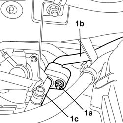
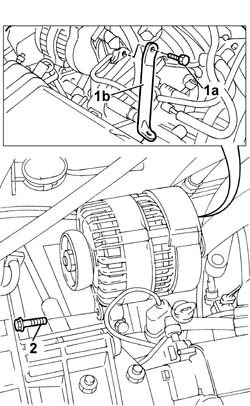
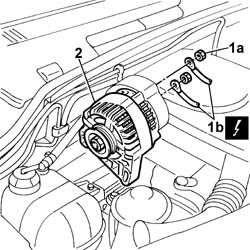
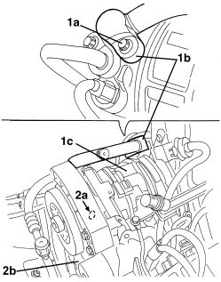
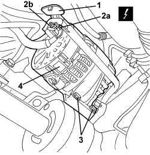
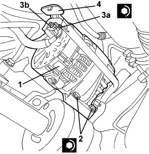
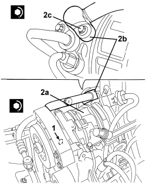

5530A14 alternator - r+r for versions with air conditioner
- Path
- Procedures > 55 ELECTRICAL EQUIPMENT > 5530 CURRENT GENERATOR > 5530A alternator and components > 5530A14 alternator - r+r for versions with air conditioner
- Kind
- repair procedure (removal / refitting; the operation number is the code)
- Applies to
- engines: 1.2 8v, 1.4 8v, 1.9 DIESEL; all production periods
- Interactive page
- https://sloeber94.github.io/elrnDB-fDbl/en/#/2584921
Applies to: engines: 1.2 8v; all production periods
 Removing
Removing
 Refitting
RefittingDisconnect the negative battery terminal.
Op. 0010T84 COOLANT FOR AIR CONDITIONING SYSTEM - DEHYDRATE AND RECHARGE
Op. 1092B68 BELT FROM A/C COMPRESSOR TO ALTERNATOR DRIVE - R + R
1. Unscrew bolt (1a) securing the junction between rigid section (1b) and flexible section (1d) of the air conditioning high pressure pipe and move the flexible section aside.

Applies to: engines: 1.2 8v; all production periods
1. Pass a suitable wrench through the back of the air filter casing and unscrew bolt (1a) securing the alternator bracket (1b).
2. Unscrew the bolts loosened previously to remove the belt.

Applies to: engines: 1.2 8v; all production periods
1. Undo the fixing nuts (1a) and disconnect the alternator leads (1b).
Description | Connector | |
|---|---|---|
1b | Alternator |
2. Remove the alternator assembly.

Applies to: engines: 1.2 8v; all production periods
Refitting
RemovingFit the alternator in its seat and connect the electrical wiring, securing with the nut.
Description | Connector | |
|---|---|---|
- | Alternator |
Fastening | Component | dia | Value (daNm) | |
|---|---|---|---|---|
- | Nut | ALTERNATOR ECU LEAD/S | M8 | (Lead B+) 2.4 |
Screw in the alternator bolts and fit the drive belt to the alternator pulley.
Tighten the bolt fixing the alternator reinforcement bracket.
Connect the flexible section and the flexible section of the air conditioning system high pressure pipe by tightening the bolt securing the joint between them.
Op. 1092B68 BELT FROM A/C COMPRESSOR TO ALTERNATOR DRIVE - R + R
Op. 1092B70 BELT FROM AIR CONDITIONER COMPRESSOR TO ALTERNATOR DRIVE - ADJUST TENSION
Op. 0010T84 COOLANT FOR AIR CONDITIONING SYSTEM - DEHYDRATE AND RECHARGE
Connect the negative battery terminal.
Applies to: engines: 1.9 DIESEL; all production periods
Applies to: engines: 1.4 8v; all production periods
Removing
Refitting- Position the vehicle on a lift.
- Drain the coolant.
Op. 0010T84 COOLANT FOR AIR CONDITIONING SYSTEM - DEHYDRATE AND RECHARGE
Op. 4450B04 RIGHT FRONT WHEEL - R.R.
Op. 7055B66 ENGINE COMPARTMENT DUST COVER IN RIGHT FRONT WHEEL ARCH - R.R.
Op. 1092C11 POWER STEERING PUMP DRIVE BELT - R.R. FOR VERSIONS WITH AIR CONDITIONER
Op. 1092G10 SINGLE ENGINE BELT - R.R.
1. Undo the bolt (1a) and disconnect the connector (1b) for the pipe from the compressor (1c).
(Operation required in order to unscrwe the upper alternator bolt (2a)).
2. Unscrew upper bolt (2a) of alternator (2b).

Applies to: engines: 1.4 8v; all production periods
- Raise the vehicle.
1. Release and open the cover for the alternator electrical connections.
2. Disconnect the electrical connections (2a) and (2b) for the alternator.
Description | Connector | |
|---|---|---|
2a | ALTERNATOR |
3. Loosen the lower alternator retaining bolts.
4. Remove the alternator.

Applies to: engines: 1.4 8v; all production periods
Refitting
Removing- Check that the alternator is not damaged.
1. Position the alternator.
2. Screw in the lower compressor fixing bolts and tighten them to the specified torque.
Value daNm | Fastening | Component | dia | |
|---|---|---|---|---|
2 | 4.5 ÷ 5.5 | Bolt | Alternator | M10x1.25 |
3. Connect the electrical connections (3a) and (3b) for the alternator and secure them using the nuts (3c).
Value daNm | Fastening | Component | dia | |
|---|---|---|---|---|
- | 0.7 ÷ 1.1 | Nut | Alternator recharging lead | M8 |
Value daNm | Fastening | Component | dia | |
|---|---|---|---|---|
- | 0.3 ÷ 0.5 | Nut | Warning light supply lead at alternator | M5 |
4. Close the cover for the electrical connections.

Applies to: engines: 1.4 8v; all production periods
- Lower the vehicle.
1. Screw in the upper alternator bolt and tighten to the recommended torque.
Value daNm | Fastening | Component | dia | |
|---|---|---|---|---|
1 | 4.5 ÷ 5.5 | Bolt | Alternator | M10x1.25 |
2. Connect the connector (2b) for the pipe to the compressor (2a) and secure it tightening the bolt (2c) to the recommended torque.
Value daNm | Fastening | Component | dia | |
|---|---|---|---|---|
2c | 0.5 ÷ 0.7 | Bolt | Pipe connector on compressor | M6 |

Applies to: engines: 1.4 8v; all production periods
Op. 1092G10 SINGLE ENGINE BELT - R.R.
Op. 1092C11 POWER STEERING PUMP DRIVE BELT - R.R. FOR VERSIONS WITH AIR CONDITIONER
Op. 7055B66 ENGINE COMPARTMENT DUST COVER IN RIGHT FRONT WHEEL ARCH - R.R.
Op. 4450B04 RIGHT FRONT WHEEL - R.R.
- Repressurize the coolant
Op. 0010T84 COOLANT FOR AIR CONDITIONING SYSTEM - DEHYDRATE AND RECHARGE
- Remove the vehicle from the lift.
Topics linked from this page (9)
- 0010T84 coolant for air conditioning system dehydrate and recharge
- 1092B68 belt from a/c compressor to alternator drive r + r
- 1092B70 belt from air conditioner compressor to alternator drive -adjust and tension
- 1092C11 power steering pump drive belt - r r for versions with air conditioner
- 1092G10 single engine belt r r
- 4450B04 right front wheel r r
- 5040 AIR CONDITIONING CASING AND COMPONENTS
- 5530A10 alternator - r+r
- A010 ALTERNATOR